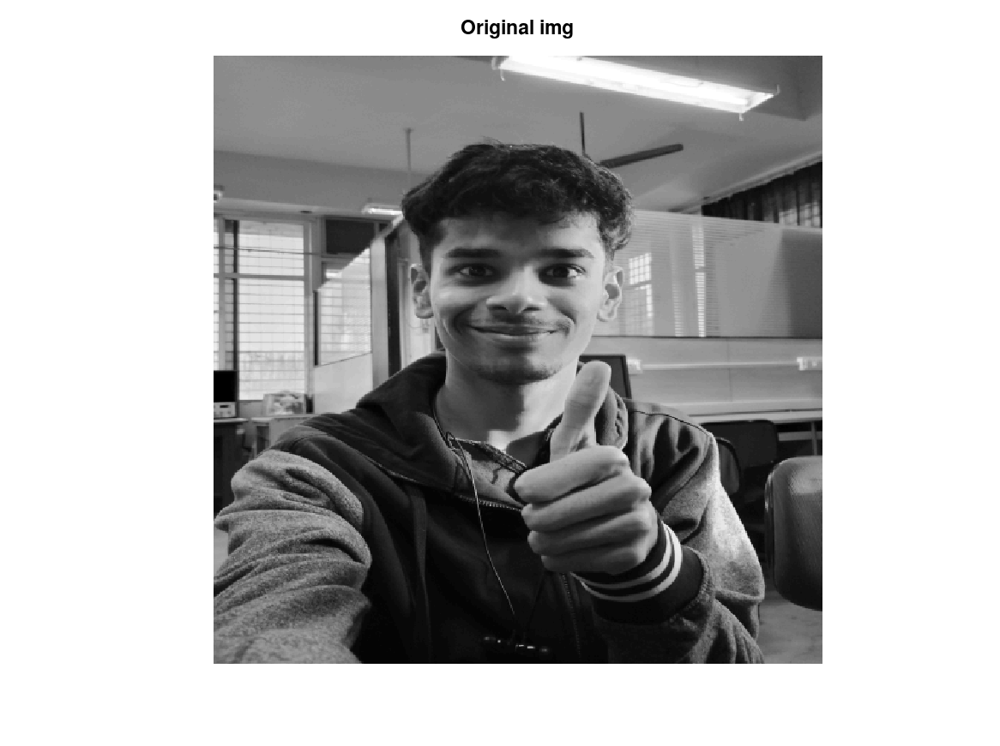
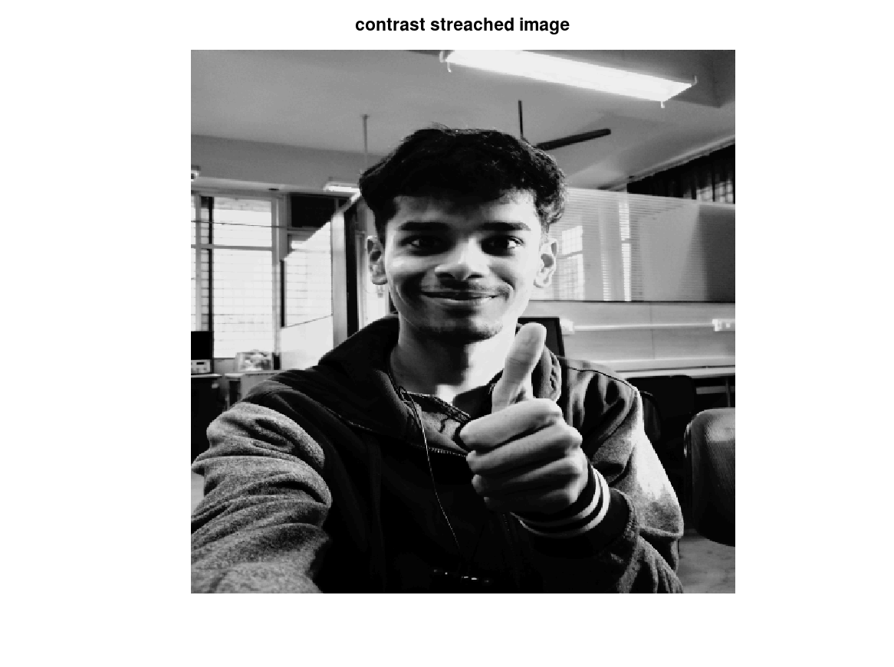

clc; clear; f=imread('Img_3.tif'); [row,col]=size(f) %constants r1=50; r2=190; alpha=0.3; beta=1.5; gamma=0.2; s1=alpha*r1; s2=beta*(r2-r1)+s1; %logical for x=1:1:row for y=1:1:col if f(x,y)>=0 && f(x,y)<=r1 g(x,y)=alpha*f(x,y); elseif f(x,y)> r1 && f(x,y)<=r2 g(x,y)=beta*(f(x,y)-r1)+s1; else g(x,y)=gamma*(f(x,y)-r2)+s2; endif endfor endfor figure(1), imshow(uint8(f)), title('Original img') figure(2), imshow(uint8(g)), title('contrast streached image')
row = 500 col = 500